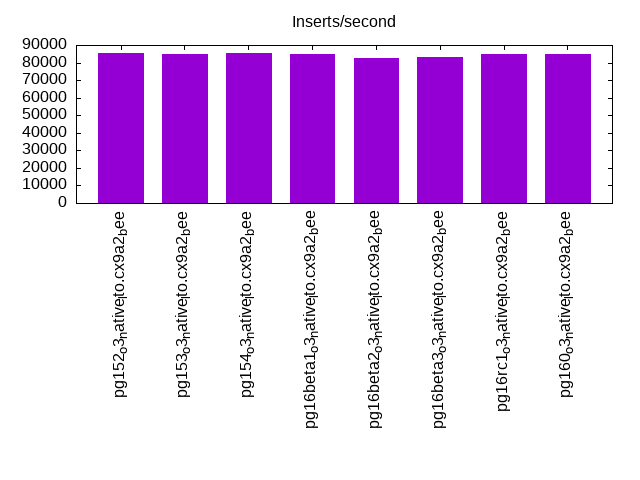
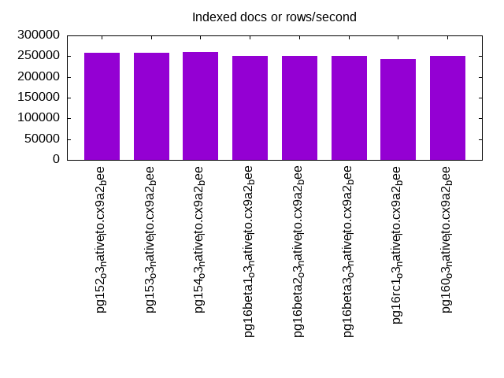
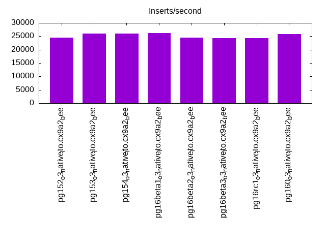
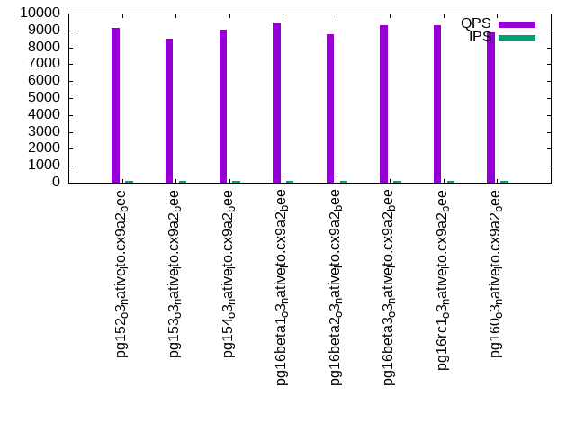
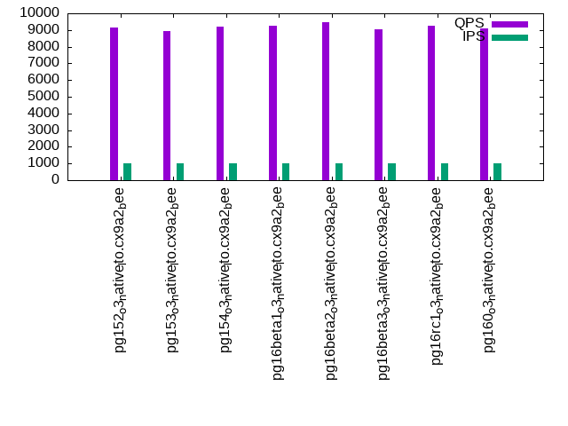

Introduction
This is a report for the insert benchmark with 20M docs and 1 client(s). It is generated by scripts (bash, awk, sed) and Tufte might not be impressed. An overview of the insert benchmark is here and a short update is here. Below, by DBMS, I mean DBMS+version.config. An example is my8020.c10b40 where my means MySQL, 8020 is version 8.0.20 and c10b40 is the name for the configuration file.
The test server has 8 AMD cores, 16G RAM and an NVMe SSD. It is described here as the Beelink. The benchmark was run with 1 client and there were 1 or 3 connections per client (1 for queries or inserts without rate limits, 1+1 for rate limited inserts+deletes). It uses 1 table. It loads 20M rows per table without secondary indexes, creates secondary indexes, then inserts 300M rows per table with a delete per insert to avoid growing the table. It then does 3 read+write tests for 7200s each that do queries as fast as possible with 100, 500 and then 1000 inserts/second/client concurrent with the queries and 1000 deletes/second to avoid growing the table. The database is cached by Postgres. Clients and the DBMS share one server. The per-database configs are in the per-database subdirectories here.
The tested DBMS are:
- pg152_o3_native_lto.cx9a2_bee - Postgres 15.3, o3_native_lto build that used -O3 -march/-mtune=native, -flto, a2 config
- pg153_o3_native_lto.cx9a2_bee - Postgres 15.3, o3_native_lto build that used -O3 -march/-mtune=native, -flto, a2 config
- pg154_o3_native_lto.cx9a2_bee - Postgres 15.4, o3_native_lto build that used -O3 -march/-mtune=native, -flto, a2 config
- pg16beta1_o3_native_lto.cx9a2_bee - Postgres 16 beta1, o3_native_lto build that used -O3 -march/-mtune=native, -flto, a1 config
- pg16beta2_o3_native_lto.cx9a2_bee - Postgres 16 beta2, o3_native_lto build that used -O3 -march/-mtune=native, -flto, a2 config
- pg16beta3_o3_native_lto.cx9a2_bee - Postgres 16 beta3, o3_native_lto build that used -O3 -march/-mtune=native, -flto, a2 config
- pg16rc1_o3_native_lto.cx9a2_bee - Postgres 16 rc1, o3_native_lto build that used -O3 -march/-mtune=native, -flto, a2 config
- pg160_o3_native_lto.cx9a2_bee - Postgres 16.0, o3_native_lto build that used -O3 -march/-mtune=native, -flto, a2 config
Contents
- Summary
- l.i0: load without secondary indexes
- l.x: create secondary indexes
- l.i1: continue load after secondary indexes created
- q100.1: range queries with 100 insert/s per client
- q500.1: range queries with 500 insert/s per client
- q1000.1: range queries with 1000 insert/s per client
Summary
The numbers are inserts/s for l.i0 and l.i1, indexed docs (or rows) /s for l.x and queries/s for q*.2. The values are the average rate over the entire test for inserts (IPS) and queries (QPS). The range of values for IPS and QPS is split into 3 parts: bottom 25%, middle 50%, top 25%. Values in the bottom 25% have a red background, values in the top 25% have a green background and values in the middle have no color. A gray background is used for values that can be ignored because the DBMS did not sustain the target insert rate. Red backgrounds are not used when the minimum value is within 80% of the max value.
| dbms | l.i0 | l.x | l.i1 | q100.1 | q500.1 | q1000.1 |
|---|---|---|---|---|---|---|
| pg152_o3_native_lto.cx9a2_bee | 85470 | 257692 | 24580 | 9133 | 9084 | 9133 |
| pg153_o3_native_lto.cx9a2_bee | 85106 | 257692 | 26046 | 8508 | 8997 | 8912 |
| pg154_o3_native_lto.cx9a2_bee | 85470 | 261039 | 25988 | 9028 | 9293 | 9203 |
| pg16beta1_o3_native_lto.cx9a2_bee | 84746 | 251250 | 26110 | 9448 | 9002 | 9266 |
| pg16beta2_o3_native_lto.cx9a2_bee | 82645 | 251250 | 24420 | 8763 | 9284 | 9485 |
| pg16beta3_o3_native_lto.cx9a2_bee | 82988 | 251250 | 24319 | 9300 | 8786 | 9045 |
| pg16rc1_o3_native_lto.cx9a2_bee | 84746 | 242169 | 24229 | 9293 | 8978 | 9268 |
| pg160_o3_native_lto.cx9a2_bee | 84746 | 251250 | 25878 | 8888 | 9152 | 9071 |
This table has relative throughput, throughput for the DBMS relative to the DBMS in the first line, using the absolute throughput from the previous table. Values less than 0.95 have a yellow background. Values greater than 1.05 have a blue background.
| dbms | l.i0 | l.x | l.i1 | q100.1 | q500.1 | q1000.1 |
|---|---|---|---|---|---|---|
| pg152_o3_native_lto.cx9a2_bee | 1.00 | 1.00 | 1.00 | 1.00 | 1.00 | 1.00 |
| pg153_o3_native_lto.cx9a2_bee | 1.00 | 1.00 | 1.06 | 0.93 | 0.99 | 0.98 |
| pg154_o3_native_lto.cx9a2_bee | 1.00 | 1.01 | 1.06 | 0.99 | 1.02 | 1.01 |
| pg16beta1_o3_native_lto.cx9a2_bee | 0.99 | 0.98 | 1.06 | 1.03 | 0.99 | 1.01 |
| pg16beta2_o3_native_lto.cx9a2_bee | 0.97 | 0.98 | 0.99 | 0.96 | 1.02 | 1.04 |
| pg16beta3_o3_native_lto.cx9a2_bee | 0.97 | 0.98 | 0.99 | 1.02 | 0.97 | 0.99 |
| pg16rc1_o3_native_lto.cx9a2_bee | 0.99 | 0.94 | 0.99 | 1.02 | 0.99 | 1.01 |
| pg160_o3_native_lto.cx9a2_bee | 0.99 | 0.98 | 1.05 | 0.97 | 1.01 | 0.99 |
This lists the average rate of inserts/s for the tests that do inserts concurrent with queries. For such tests the query rate is listed in the table above. The read+write tests are setup so that the insert rate should match the target rate every second. Cells that are not at least 95% of the target have a red background to indicate a failure to satisfy the target.
| dbms | q100.1 | q500.1 | q1000.1 |
|---|---|---|---|
| pg152_o3_native_lto.cx9a2_bee | 100 | 499 | 998 |
| pg153_o3_native_lto.cx9a2_bee | 100 | 499 | 997 |
| pg154_o3_native_lto.cx9a2_bee | 100 | 499 | 998 |
| pg16beta1_o3_native_lto.cx9a2_bee | 100 | 499 | 998 |
| pg16beta2_o3_native_lto.cx9a2_bee | 100 | 499 | 998 |
| pg16beta3_o3_native_lto.cx9a2_bee | 100 | 499 | 999 |
| pg16rc1_o3_native_lto.cx9a2_bee | 100 | 499 | 998 |
| pg160_o3_native_lto.cx9a2_bee | 100 | 499 | 998 |
| target | 100 | 500 | 1000 |
l.i0
l.i0: load without secondary indexes. Graphs for performance per 1-second interval are here.
Average throughput:
Insert response time histogram: each cell has the percentage of responses that take <= the time in the header and max is the max response time in seconds. For the max column values in the top 25% of the range have a red background and in the bottom 25% of the range have a green background. The red background is not used when the min value is within 80% of the max value.
| dbms | 256us | 1ms | 4ms | 16ms | 64ms | 256ms | 1s | 4s | 16s | gt | max |
|---|---|---|---|---|---|---|---|---|---|---|---|
| pg152_o3_native_lto.cx9a2_bee | 0.024 | 99.977 | 0.003 | ||||||||
| pg153_o3_native_lto.cx9a2_bee | 0.018 | 99.982 | 0.003 | ||||||||
| pg154_o3_native_lto.cx9a2_bee | 0.076 | 99.924 | 0.003 | ||||||||
| pg16beta1_o3_native_lto.cx9a2_bee | 0.012 | 99.988 | 0.003 | ||||||||
| pg16beta2_o3_native_lto.cx9a2_bee | 100.000 | 0.003 | |||||||||
| pg16beta3_o3_native_lto.cx9a2_bee | 100.000 | 0.003 | |||||||||
| pg16rc1_o3_native_lto.cx9a2_bee | 0.025 | 99.975 | 0.003 | ||||||||
| pg160_o3_native_lto.cx9a2_bee | 0.015 | 99.984 | 0.003 |
Performance metrics for the DBMS listed above. Some are normalized by throughput, others are not. Legend for results is here.
ips qps rps rmbps wps wmbps rpq rkbpq wpi wkbpi csps cpups cspq cpupq dbgb1 dbgb2 rss maxop p50 p99 tag 85470 0 0 0.0 100.0 36.4 0.000 0.000 0.001 0.436 10313 23.1 0.121 22 1.9 5.2 0.3 0.003 85711 82900 20m.pg152_o3_native_lto.cx9a2_bee 85106 0 0 0.0 100.0 36.1 0.000 0.000 0.001 0.434 10260 22.7 0.121 21 1.9 5.2 0.2 0.003 85406 81907 20m.pg153_o3_native_lto.cx9a2_bee 85470 0 0 0.0 101.7 36.6 0.000 0.000 0.001 0.439 10393 22.7 0.122 21 1.9 5.2 1.8 0.003 86303 76593 20m.pg154_o3_native_lto.cx9a2_bee 84746 0 0 0.0 100.4 36.0 0.000 0.000 0.001 0.436 10269 22.7 0.121 21 1.9 5.2 0.3 0.003 85407 73720 20m.pg16beta1_o3_native_lto.cx9a2_bee 82645 0 0 0.0 97.9 35.1 0.000 0.000 0.001 0.435 10070 23.0 0.122 22 1.9 5.2 1.9 0.003 83224 79634 20m.pg16beta2_o3_native_lto.cx9a2_bee 82988 0 0 0.0 97.8 35.1 0.000 0.000 0.001 0.433 10058 23.1 0.121 22 1.9 5.2 1.9 0.003 83304 79508 20m.pg16beta3_o3_native_lto.cx9a2_bee 84746 0 0 0.0 98.4 36.1 0.000 0.000 0.001 0.436 10283 22.7 0.121 21 1.9 5.2 0.3 0.003 85503 82603 20m.pg16rc1_o3_native_lto.cx9a2_bee 84746 0 0 0.0 98.5 36.0 0.000 0.000 0.001 0.435 10251 22.5 0.121 21 1.9 5.2 0.2 0.003 85207 81374 20m.pg160_o3_native_lto.cx9a2_bee
l.x
l.x: create secondary indexes.
Average throughput:
Performance metrics for the DBMS listed above. Some are normalized by throughput, others are not. Legend for results is here.
ips qps rps rmbps wps wmbps rpq rkbpq wpi wkbpi csps cpups cspq cpupq dbgb1 dbgb2 rss maxop p50 p99 tag 257692 0 0 0.0 108.0 50.1 0.000 0.000 0.000 0.199 701 11.9 0.003 4 3.7 8.6 2.1 0.003 NA NA 20m.pg152_o3_native_lto.cx9a2_bee 257692 0 0 0.0 110.7 51.5 0.000 0.000 0.000 0.204 711 11.9 0.003 4 3.7 8.6 2.1 0.003 NA NA 20m.pg153_o3_native_lto.cx9a2_bee 261039 0 0 0.0 115.1 53.3 0.000 0.000 0.000 0.209 723 11.9 0.003 4 3.7 8.6 2.1 0.003 NA NA 20m.pg154_o3_native_lto.cx9a2_bee 251250 0 0 0.0 101.7 47.0 0.000 0.000 0.000 0.191 732 11.9 0.003 4 3.7 8.6 2.1 0.003 NA NA 20m.pg16beta1_o3_native_lto.cx9a2_bee 251250 0 0 0.0 153.8 71.6 0.000 0.000 0.001 0.292 874 11.8 0.003 4 3.7 8.6 2.1 0.003 NA NA 20m.pg16beta2_o3_native_lto.cx9a2_bee 251250 0 0 0.0 134.4 62.7 0.000 0.000 0.001 0.256 742 12.1 0.003 4 3.7 8.6 2.1 0.002 NA NA 20m.pg16beta3_o3_native_lto.cx9a2_bee 242169 0 0 0.0 107.7 50.2 0.000 0.000 0.000 0.212 736 11.8 0.003 4 3.7 8.6 2.1 0.003 NA NA 20m.pg16rc1_o3_native_lto.cx9a2_bee 251250 0 0 0.0 134.7 62.7 0.000 0.000 0.001 0.256 739 11.8 0.003 4 3.7 8.6 2.1 0.003 NA NA 20m.pg160_o3_native_lto.cx9a2_bee
l.i1
l.i1: continue load after secondary indexes created. Graphs for performance per 1-second interval are here.
Average throughput:
Insert response time histogram: each cell has the percentage of responses that take <= the time in the header and max is the max response time in seconds. For the max column values in the top 25% of the range have a red background and in the bottom 25% of the range have a green background. The red background is not used when the min value is within 80% of the max value.
| dbms | 256us | 1ms | 4ms | 16ms | 64ms | 256ms | 1s | 4s | 16s | gt | max |
|---|---|---|---|---|---|---|---|---|---|---|---|
| pg152_o3_native_lto.cx9a2_bee | 99.999 | 0.001 | nonzero | 0.020 | |||||||
| pg153_o3_native_lto.cx9a2_bee | 99.999 | 0.001 | nonzero | 0.047 | |||||||
| pg154_o3_native_lto.cx9a2_bee | 99.999 | 0.001 | nonzero | 0.025 | |||||||
| pg16beta1_o3_native_lto.cx9a2_bee | 99.999 | 0.001 | nonzero | 0.033 | |||||||
| pg16beta2_o3_native_lto.cx9a2_bee | 99.999 | 0.001 | nonzero | 0.027 | |||||||
| pg16beta3_o3_native_lto.cx9a2_bee | 99.999 | 0.001 | nonzero | 0.024 | |||||||
| pg16rc1_o3_native_lto.cx9a2_bee | 99.998 | 0.001 | 0.001 | 0.058 | |||||||
| pg160_o3_native_lto.cx9a2_bee | 99.999 | 0.001 | nonzero | 0.026 |
Delete response time histogram: each cell has the percentage of responses that take <= the time in the header and max is the max response time in seconds. For the max column values in the top 25% of the range have a red background and in the bottom 25% of the range have a green background. The red background is not used when the min value is within 80% of the max value.
| dbms | 256us | 1ms | 4ms | 16ms | 64ms | 256ms | 1s | 4s | 16s | gt | max |
|---|---|---|---|---|---|---|---|---|---|---|---|
| pg152_o3_native_lto.cx9a2_bee | 0.684 | 83.822 | 2.164 | 13.330 | nonzero | 0.019 | |||||
| pg153_o3_native_lto.cx9a2_bee | 0.708 | 83.262 | 9.716 | 6.314 | nonzero | 0.045 | |||||
| pg154_o3_native_lto.cx9a2_bee | 0.653 | 83.530 | 9.675 | 6.141 | nonzero | 0.022 | |||||
| pg16beta1_o3_native_lto.cx9a2_bee | 0.682 | 83.273 | 9.041 | 7.005 | nonzero | 0.026 | |||||
| pg16beta2_o3_native_lto.cx9a2_bee | 0.680 | 83.785 | 2.262 | 13.273 | nonzero | 0.027 | |||||
| pg16beta3_o3_native_lto.cx9a2_bee | 0.564 | 83.771 | 2.094 | 13.571 | nonzero | 0.018 | |||||
| pg16rc1_o3_native_lto.cx9a2_bee | 0.657 | 83.663 | 3.465 | 12.214 | nonzero | 0.057 | |||||
| pg160_o3_native_lto.cx9a2_bee | 0.549 | 83.549 | 9.104 | 6.798 | nonzero | 0.022 |
Performance metrics for the DBMS listed above. Some are normalized by throughput, others are not. Legend for results is here.
ips qps rps rmbps wps wmbps rpq rkbpq wpi wkbpi csps cpups cspq cpupq dbgb1 dbgb2 rss maxop p50 p99 tag 24580 0 0 0.0 72.0 19.7 0.000 0.000 0.003 0.820 11760 23.2 0.478 76 5.1 45.2 1.6 0.020 32514 8344 20m.pg152_o3_native_lto.cx9a2_bee 26046 0 0 0.0 76.3 20.8 0.000 0.000 0.003 0.819 12480 23.9 0.479 73 5.1 45.1 5.0 0.047 32579 5645 20m.pg153_o3_native_lto.cx9a2_bee 25988 0 0 0.0 76.7 20.8 0.000 0.000 0.003 0.819 12446 23.9 0.479 74 5.1 45.1 4.8 0.025 32664 5499 20m.pg154_o3_native_lto.cx9a2_bee 26110 0 0 0.0 76.9 20.9 0.000 0.000 0.003 0.821 12485 24.1 0.478 74 5.1 45.2 5.0 0.033 32563 7791 20m.pg16beta1_o3_native_lto.cx9a2_bee 24420 0 0 0.0 71.8 19.5 0.000 0.000 0.003 0.819 11741 23.3 0.481 76 5.1 45.2 3.5 0.027 32164 8292 20m.pg16beta2_o3_native_lto.cx9a2_bee 24319 0 0 0.0 71.1 19.5 0.000 0.000 0.003 0.819 11628 23.2 0.478 76 5.1 45.2 4.0 0.024 32165 8241 20m.pg16beta3_o3_native_lto.cx9a2_bee 24229 0 0 0.0 71.7 19.6 0.000 0.000 0.003 0.829 11577 23.1 0.478 76 5.1 45.2 5.2 0.058 32470 4695 20m.pg16rc1_o3_native_lto.cx9a2_bee 25878 0 0 0.0 75.4 20.7 0.000 0.000 0.003 0.820 12367 24.1 0.478 75 5.1 45.2 5.2 0.026 32265 7392 20m.pg160_o3_native_lto.cx9a2_bee
q100.1
q100.1: range queries with 100 insert/s per client. Graphs for performance per 1-second interval are here.
Average throughput:
Query response time histogram: each cell has the percentage of responses that take <= the time in the header and max is the max response time in seconds. For max values in the top 25% of the range have a red background and in the bottom 25% of the range have a green background. The red background is not used when the min value is within 80% of the max value.
| dbms | 256us | 1ms | 4ms | 16ms | 64ms | 256ms | 1s | 4s | 16s | gt | max |
|---|---|---|---|---|---|---|---|---|---|---|---|
| pg152_o3_native_lto.cx9a2_bee | 99.968 | 0.032 | nonzero | nonzero | 0.004 | ||||||
| pg153_o3_native_lto.cx9a2_bee | 99.952 | 0.048 | nonzero | nonzero | 0.004 | ||||||
| pg154_o3_native_lto.cx9a2_bee | 99.951 | 0.049 | nonzero | nonzero | 0.004 | ||||||
| pg16beta1_o3_native_lto.cx9a2_bee | 99.966 | 0.034 | nonzero | 0.003 | |||||||
| pg16beta2_o3_native_lto.cx9a2_bee | 99.964 | 0.036 | nonzero | nonzero | 0.005 | ||||||
| pg16beta3_o3_native_lto.cx9a2_bee | 99.966 | 0.034 | nonzero | 0.003 | |||||||
| pg16rc1_o3_native_lto.cx9a2_bee | 99.956 | 0.044 | nonzero | nonzero | 0.004 | ||||||
| pg160_o3_native_lto.cx9a2_bee | 99.966 | 0.033 | nonzero | nonzero | 0.005 |
Insert response time histogram: each cell has the percentage of responses that take <= the time in the header and max is the max response time in seconds. For max values in the top 25% of the range have a red background and in the bottom 25% of the range have a green background. The red background is not used when the min value is within 80% of the max value.
| dbms | 256us | 1ms | 4ms | 16ms | 64ms | 256ms | 1s | 4s | 16s | gt | max |
|---|---|---|---|---|---|---|---|---|---|---|---|
| pg152_o3_native_lto.cx9a2_bee | 99.965 | 0.035 | 0.006 | ||||||||
| pg153_o3_native_lto.cx9a2_bee | 99.972 | 0.028 | 0.006 | ||||||||
| pg154_o3_native_lto.cx9a2_bee | 99.979 | 0.021 | 0.007 | ||||||||
| pg16beta1_o3_native_lto.cx9a2_bee | 99.986 | 0.014 | 0.006 | ||||||||
| pg16beta2_o3_native_lto.cx9a2_bee | 99.986 | 0.014 | 0.007 | ||||||||
| pg16beta3_o3_native_lto.cx9a2_bee | 99.979 | 0.021 | 0.006 | ||||||||
| pg16rc1_o3_native_lto.cx9a2_bee | 99.979 | 0.021 | 0.007 | ||||||||
| pg160_o3_native_lto.cx9a2_bee | 99.965 | 0.035 | 0.005 |
Delete response time histogram: each cell has the percentage of responses that take <= the time in the header and max is the max response time in seconds. For max values in the top 25% of the range have a red background and in the bottom 25% of the range have a green background. The red background is not used when the min value is within 80% of the max value.
| dbms | 256us | 1ms | 4ms | 16ms | 64ms | 256ms | 1s | 4s | 16s | gt | max |
|---|---|---|---|---|---|---|---|---|---|---|---|
| pg152_o3_native_lto.cx9a2_bee | 1.076 | 71.715 | 9.458 | 17.750 | 0.006 | ||||||
| pg153_o3_native_lto.cx9a2_bee | 1.812 | 68.500 | 14.278 | 15.410 | 0.007 | ||||||
| pg154_o3_native_lto.cx9a2_bee | 3.757 | 96.229 | 0.014 | 0.002 | |||||||
| pg16beta1_o3_native_lto.cx9a2_bee | 0.910 | 98.472 | 0.618 | 0.003 | |||||||
| pg16beta2_o3_native_lto.cx9a2_bee | 1.868 | 69.792 | 7.812 | 20.528 | 0.008 | ||||||
| pg16beta3_o3_native_lto.cx9a2_bee | 1.833 | 72.028 | 0.021 | 26.118 | 0.010 | ||||||
| pg16rc1_o3_native_lto.cx9a2_bee | 1.361 | 69.417 | 3.681 | 25.542 | 0.008 | ||||||
| pg160_o3_native_lto.cx9a2_bee | 1.264 | 68.562 | 2.743 | 27.431 | 0.007 |
Performance metrics for the DBMS listed above. Some are normalized by throughput, others are not. Legend for results is here.
ips qps rps rmbps wps wmbps rpq rkbpq wpi wkbpi csps cpups cspq cpupq dbgb1 dbgb2 rss maxop p50 p99 tag 100 9133 0 0.0 49.4 2.2 0.000 0.000 0.495 23.009 35152 12.9 3.849 113 5.1 43.5 3.4 0.004 8646 8464 20m.pg152_o3_native_lto.cx9a2_bee 100 8508 0 0.0 48.6 2.2 0.000 0.000 0.488 22.895 32770 13.1 3.852 123 5.1 43.4 3.4 0.004 8359 8224 20m.pg153_o3_native_lto.cx9a2_bee 100 9028 0 0.0 47.8 2.2 0.000 0.000 0.480 22.752 34767 13.1 3.851 116 5.1 43.4 1.1 0.004 8711 8527 20m.pg154_o3_native_lto.cx9a2_bee 100 9448 0 0.0 48.8 2.2 0.000 0.000 0.489 22.926 36352 12.8 3.847 108 5.1 43.6 3.5 0.003 8819 8484 20m.pg16beta1_o3_native_lto.cx9a2_bee 100 8763 0 0.0 49.2 2.2 0.000 0.000 0.493 23.076 33723 13.2 3.848 121 5.1 43.5 3.5 0.005 8582 8404 20m.pg16beta2_o3_native_lto.cx9a2_bee 100 9300 0 0.0 49.7 2.3 0.000 0.000 0.498 23.134 35766 12.8 3.846 110 5.1 43.5 3.4 0.003 8763 8342 20m.pg16beta3_o3_native_lto.cx9a2_bee 100 9293 0 0.0 50.8 2.0 0.000 0.000 0.509 21.055 35770 12.9 3.849 111 5.1 42.3 1.4 0.004 8733 8474 20m.pg16rc1_o3_native_lto.cx9a2_bee 100 8888 0 0.0 49.2 2.2 0.000 0.000 0.493 22.999 34209 13.0 3.849 117 5.2 43.5 3.4 0.005 8502 8357 20m.pg160_o3_native_lto.cx9a2_bee
q500.1
q500.1: range queries with 500 insert/s per client. Graphs for performance per 1-second interval are here.
Average throughput:

Query response time histogram: each cell has the percentage of responses that take <= the time in the header and max is the max response time in seconds. For max values in the top 25% of the range have a red background and in the bottom 25% of the range have a green background. The red background is not used when the min value is within 80% of the max value.
| dbms | 256us | 1ms | 4ms | 16ms | 64ms | 256ms | 1s | 4s | 16s | gt | max |
|---|---|---|---|---|---|---|---|---|---|---|---|
| pg152_o3_native_lto.cx9a2_bee | 99.964 | 0.036 | nonzero | nonzero | 0.009 | ||||||
| pg153_o3_native_lto.cx9a2_bee | 99.965 | 0.035 | nonzero | nonzero | nonzero | 0.022 | |||||
| pg154_o3_native_lto.cx9a2_bee | 99.969 | 0.030 | nonzero | nonzero | 0.015 | ||||||
| pg16beta1_o3_native_lto.cx9a2_bee | 99.968 | 0.032 | nonzero | nonzero | nonzero | 0.042 | |||||
| pg16beta2_o3_native_lto.cx9a2_bee | 99.968 | 0.032 | nonzero | nonzero | nonzero | 0.017 | |||||
| pg16beta3_o3_native_lto.cx9a2_bee | 99.961 | 0.039 | nonzero | nonzero | nonzero | 0.017 | |||||
| pg16rc1_o3_native_lto.cx9a2_bee | 99.966 | 0.034 | nonzero | nonzero | 0.009 | ||||||
| pg160_o3_native_lto.cx9a2_bee | 99.969 | 0.031 | nonzero | nonzero | nonzero | 0.016 |
Insert response time histogram: each cell has the percentage of responses that take <= the time in the header and max is the max response time in seconds. For max values in the top 25% of the range have a red background and in the bottom 25% of the range have a green background. The red background is not used when the min value is within 80% of the max value.
| dbms | 256us | 1ms | 4ms | 16ms | 64ms | 256ms | 1s | 4s | 16s | gt | max |
|---|---|---|---|---|---|---|---|---|---|---|---|
| pg152_o3_native_lto.cx9a2_bee | 99.981 | 0.019 | 0.014 | ||||||||
| pg153_o3_native_lto.cx9a2_bee | 99.981 | 0.018 | 0.001 | 0.021 | |||||||
| pg154_o3_native_lto.cx9a2_bee | 99.978 | 0.021 | 0.001 | 0.019 | |||||||
| pg16beta1_o3_native_lto.cx9a2_bee | 99.985 | 0.014 | 0.001 | 0.030 | |||||||
| pg16beta2_o3_native_lto.cx9a2_bee | 99.971 | 0.017 | 0.013 | 0.028 | |||||||
| pg16beta3_o3_native_lto.cx9a2_bee | 99.985 | 0.013 | 0.003 | 0.022 | |||||||
| pg16rc1_o3_native_lto.cx9a2_bee | 99.981 | 0.015 | 0.004 | 0.022 | |||||||
| pg160_o3_native_lto.cx9a2_bee | 99.982 | 0.014 | 0.004 | 0.020 |
Delete response time histogram: each cell has the percentage of responses that take <= the time in the header and max is the max response time in seconds. For max values in the top 25% of the range have a red background and in the bottom 25% of the range have a green background. The red background is not used when the min value is within 80% of the max value.
| dbms | 256us | 1ms | 4ms | 16ms | 64ms | 256ms | 1s | 4s | 16s | gt | max |
|---|---|---|---|---|---|---|---|---|---|---|---|
| pg152_o3_native_lto.cx9a2_bee | 9.432 | 69.475 | 18.083 | 3.010 | 0.012 | ||||||
| pg153_o3_native_lto.cx9a2_bee | 9.850 | 67.938 | 19.010 | 3.201 | 0.001 | 0.019 | |||||
| pg154_o3_native_lto.cx9a2_bee | 10.629 | 68.782 | 0.606 | 19.981 | 0.003 | 0.018 | |||||
| pg16beta1_o3_native_lto.cx9a2_bee | 10.990 | 67.485 | 0.142 | 21.382 | 0.001 | 0.020 | |||||
| pg16beta2_o3_native_lto.cx9a2_bee | 10.269 | 68.285 | 16.294 | 5.143 | 0.008 | 0.025 | |||||
| pg16beta3_o3_native_lto.cx9a2_bee | 9.701 | 71.643 | 0.112 | 18.540 | 0.003 | 0.019 | |||||
| pg16rc1_o3_native_lto.cx9a2_bee | 8.458 | 67.619 | 13.168 | 10.751 | 0.003 | 0.020 | |||||
| pg160_o3_native_lto.cx9a2_bee | 8.721 | 71.218 | 10.926 | 9.131 | 0.004 | 0.018 |
Performance metrics for the DBMS listed above. Some are normalized by throughput, others are not. Legend for results is here.
ips qps rps rmbps wps wmbps rpq rkbpq wpi wkbpi csps cpups cspq cpupq dbgb1 dbgb2 rss maxop p50 p99 tag 499 9084 0 0.0 33.4 3.0 0.000 0.000 0.067 6.113 35074 13.1 3.861 115 5.2 36.0 5.1 0.009 8621 8433 20m.pg152_o3_native_lto.cx9a2_bee 499 8997 0 0.0 33.4 3.0 0.000 0.000 0.067 6.112 34755 13.0 3.863 116 5.1 35.9 5.0 0.022 8421 8254 20m.pg153_o3_native_lto.cx9a2_bee 499 9293 0 0.0 28.6 3.0 0.000 0.000 0.057 6.191 35892 13.2 3.862 114 5.1 35.8 3.8 0.015 8710 8492 20m.pg154_o3_native_lto.cx9a2_bee 499 9002 0 0.0 33.3 3.0 0.000 0.000 0.067 6.147 34745 13.3 3.860 118 5.1 36.0 5.0 0.042 8581 8419 20m.pg16beta1_o3_native_lto.cx9a2_bee 499 9284 0 0.0 28.8 3.0 0.000 0.000 0.058 6.221 35815 13.1 3.858 113 5.1 35.9 1.9 0.017 8711 8454 20m.pg16beta2_o3_native_lto.cx9a2_bee 499 8786 0 0.0 33.8 3.0 0.000 0.000 0.068 6.101 33922 13.3 3.861 121 5.1 36.0 4.9 0.017 8488 8335 20m.pg16beta3_o3_native_lto.cx9a2_bee 499 8978 0 0.0 37.1 2.9 0.000 0.000 0.074 6.019 34675 13.2 3.862 118 5.1 34.3 5.1 0.009 8535 8348 20m.pg16rc1_o3_native_lto.cx9a2_bee 499 9152 0 0.0 33.1 3.0 0.000 0.000 0.066 6.130 35313 13.1 3.859 115 5.2 36.0 1.2 0.016 8519 8322 20m.pg160_o3_native_lto.cx9a2_bee
q1000.1
q1000.1: range queries with 1000 insert/s per client. Graphs for performance per 1-second interval are here.
Average throughput:
Query response time histogram: each cell has the percentage of responses that take <= the time in the header and max is the max response time in seconds. For max values in the top 25% of the range have a red background and in the bottom 25% of the range have a green background. The red background is not used when the min value is within 80% of the max value.
| dbms | 256us | 1ms | 4ms | 16ms | 64ms | 256ms | 1s | 4s | 16s | gt | max |
|---|---|---|---|---|---|---|---|---|---|---|---|
| pg152_o3_native_lto.cx9a2_bee | 99.964 | 0.036 | nonzero | nonzero | nonzero | 0.019 | |||||
| pg153_o3_native_lto.cx9a2_bee | 99.960 | 0.040 | nonzero | nonzero | 0.015 | ||||||
| pg154_o3_native_lto.cx9a2_bee | 99.967 | 0.033 | nonzero | nonzero | 0.016 | ||||||
| pg16beta1_o3_native_lto.cx9a2_bee | 99.969 | 0.031 | nonzero | nonzero | 0.004 | ||||||
| pg16beta2_o3_native_lto.cx9a2_bee | 99.968 | 0.032 | nonzero | nonzero | 0.015 | ||||||
| pg16beta3_o3_native_lto.cx9a2_bee | 99.959 | 0.041 | nonzero | nonzero | 0.015 | ||||||
| pg16rc1_o3_native_lto.cx9a2_bee | 99.965 | 0.035 | nonzero | nonzero | nonzero | 0.019 | |||||
| pg160_o3_native_lto.cx9a2_bee | 99.961 | 0.039 | nonzero | nonzero | 0.013 |
Insert response time histogram: each cell has the percentage of responses that take <= the time in the header and max is the max response time in seconds. For max values in the top 25% of the range have a red background and in the bottom 25% of the range have a green background. The red background is not used when the min value is within 80% of the max value.
| dbms | 256us | 1ms | 4ms | 16ms | 64ms | 256ms | 1s | 4s | 16s | gt | max |
|---|---|---|---|---|---|---|---|---|---|---|---|
| pg152_o3_native_lto.cx9a2_bee | 99.990 | 0.008 | 0.003 | 0.022 | |||||||
| pg153_o3_native_lto.cx9a2_bee | 99.988 | 0.009 | 0.003 | 0.021 | |||||||
| pg154_o3_native_lto.cx9a2_bee | 99.993 | 0.006 | 0.001 | 0.024 | |||||||
| pg16beta1_o3_native_lto.cx9a2_bee | 99.994 | 0.006 | 0.007 | ||||||||
| pg16beta2_o3_native_lto.cx9a2_bee | 99.992 | 0.006 | 0.001 | 0.026 | |||||||
| pg16beta3_o3_native_lto.cx9a2_bee | 99.992 | 0.006 | 0.003 | 0.023 | |||||||
| pg16rc1_o3_native_lto.cx9a2_bee | 99.985 | 0.010 | 0.005 | 0.039 | |||||||
| pg160_o3_native_lto.cx9a2_bee | 99.989 | 0.007 | 0.004 | 0.033 |
Delete response time histogram: each cell has the percentage of responses that take <= the time in the header and max is the max response time in seconds. For max values in the top 25% of the range have a red background and in the bottom 25% of the range have a green background. The red background is not used when the min value is within 80% of the max value.
| dbms | 256us | 1ms | 4ms | 16ms | 64ms | 256ms | 1s | 4s | 16s | gt | max |
|---|---|---|---|---|---|---|---|---|---|---|---|
| pg152_o3_native_lto.cx9a2_bee | 7.006 | 76.922 | 16.058 | 0.012 | 0.003 | 0.020 | |||||
| pg153_o3_native_lto.cx9a2_bee | 6.781 | 78.112 | 15.100 | 0.004 | 0.002 | 0.019 | |||||
| pg154_o3_native_lto.cx9a2_bee | 6.484 | 72.092 | 0.108 | 21.315 | 0.001 | 0.022 | |||||
| pg16beta1_o3_native_lto.cx9a2_bee | 6.876 | 72.090 | 0.197 | 20.838 | 0.011 | ||||||
| pg16beta2_o3_native_lto.cx9a2_bee | 6.565 | 76.153 | 17.267 | 0.013 | 0.001 | 0.024 | |||||
| pg16beta3_o3_native_lto.cx9a2_bee | 5.951 | 72.958 | 11.291 | 9.797 | 0.003 | 0.021 | |||||
| pg16rc1_o3_native_lto.cx9a2_bee | 6.492 | 76.654 | 16.704 | 0.146 | 0.003 | 0.025 | |||||
| pg160_o3_native_lto.cx9a2_bee | 5.599 | 75.490 | 18.206 | 0.702 | 0.003 | 0.022 |
Performance metrics for the DBMS listed above. Some are normalized by throughput, others are not. Legend for results is here.
ips qps rps rmbps wps wmbps rpq rkbpq wpi wkbpi csps cpups cspq cpupq dbgb1 dbgb2 rss maxop p50 p99 tag 998 9133 0 0.0 28.1 3.3 0.000 0.000 0.028 3.386 35490 13.7 3.886 120 5.1 26.2 5.2 0.019 8629 8438 20m.pg152_o3_native_lto.cx9a2_bee 997 8912 0 0.0 28.3 3.3 0.000 0.000 0.028 3.381 34657 13.5 3.889 121 5.1 26.0 5.1 0.015 8373 8198 20m.pg153_o3_native_lto.cx9a2_bee 998 9203 0 0.0 26.7 3.3 0.000 0.000 0.027 3.388 35760 13.8 3.886 120 5.1 25.9 2.6 0.016 8665 8471 20m.pg154_o3_native_lto.cx9a2_bee 998 9266 0 0.0 28.5 3.3 0.000 0.000 0.029 3.382 35985 13.7 3.883 118 5.2 26.1 2.8 0.004 8629 8400 20m.pg16beta1_o3_native_lto.cx9a2_bee 998 9485 0 0.0 28.0 3.3 0.000 0.000 0.028 3.398 36803 13.5 3.880 114 5.1 26.0 3.7 0.015 8873 8542 20m.pg16beta2_o3_native_lto.cx9a2_bee 999 9045 0 0.0 28.5 3.3 0.000 0.000 0.028 3.380 35120 13.7 3.883 121 5.1 26.1 2.1 0.015 8456 8254 20m.pg16beta3_o3_native_lto.cx9a2_bee 998 9268 0 0.0 29.0 3.3 0.000 0.000 0.029 3.428 35978 13.6 3.882 117 5.1 25.2 5.2 0.019 8708 8497 20m.pg16rc1_o3_native_lto.cx9a2_bee 998 9071 0 0.0 28.1 3.3 0.000 0.000 0.028 3.384 35227 13.6 3.884 120 5.2 26.1 3.8 0.013 8500 8302 20m.pg160_o3_native_lto.cx9a2_bee
l.i0
l.i0: load without secondary indexes
Performance metrics for all DBMS, not just the ones listed above. Some are normalized by throughput, others are not. Legend for results is here.
ips qps rps rmbps wps wmbps rpq rkbpq wpi wkbpi csps cpups cspq cpupq dbgb1 dbgb2 rss maxop p50 p99 tag 85470 0 0 0.0 100.0 36.4 0.000 0.000 0.001 0.436 10313 23.1 0.121 22 1.9 5.2 0.3 0.003 85711 82900 20m.pg152_o3_native_lto.cx9a2_bee 85106 0 0 0.0 100.0 36.1 0.000 0.000 0.001 0.434 10260 22.7 0.121 21 1.9 5.2 0.2 0.003 85406 81907 20m.pg153_o3_native_lto.cx9a2_bee 85470 0 0 0.0 101.7 36.6 0.000 0.000 0.001 0.439 10393 22.7 0.122 21 1.9 5.2 1.8 0.003 86303 76593 20m.pg154_o3_native_lto.cx9a2_bee 84746 0 0 0.0 100.4 36.0 0.000 0.000 0.001 0.436 10269 22.7 0.121 21 1.9 5.2 0.3 0.003 85407 73720 20m.pg16beta1_o3_native_lto.cx9a2_bee 82645 0 0 0.0 97.9 35.1 0.000 0.000 0.001 0.435 10070 23.0 0.122 22 1.9 5.2 1.9 0.003 83224 79634 20m.pg16beta2_o3_native_lto.cx9a2_bee 82988 0 0 0.0 97.8 35.1 0.000 0.000 0.001 0.433 10058 23.1 0.121 22 1.9 5.2 1.9 0.003 83304 79508 20m.pg16beta3_o3_native_lto.cx9a2_bee 84746 0 0 0.0 98.4 36.1 0.000 0.000 0.001 0.436 10283 22.7 0.121 21 1.9 5.2 0.3 0.003 85503 82603 20m.pg16rc1_o3_native_lto.cx9a2_bee 84746 0 0 0.0 98.5 36.0 0.000 0.000 0.001 0.435 10251 22.5 0.121 21 1.9 5.2 0.2 0.003 85207 81374 20m.pg160_o3_native_lto.cx9a2_bee
l.x
l.x: create secondary indexes
Performance metrics for all DBMS, not just the ones listed above. Some are normalized by throughput, others are not. Legend for results is here.
ips qps rps rmbps wps wmbps rpq rkbpq wpi wkbpi csps cpups cspq cpupq dbgb1 dbgb2 rss maxop p50 p99 tag 257692 0 0 0.0 108.0 50.1 0.000 0.000 0.000 0.199 701 11.9 0.003 4 3.7 8.6 2.1 0.003 NA NA 20m.pg152_o3_native_lto.cx9a2_bee 257692 0 0 0.0 110.7 51.5 0.000 0.000 0.000 0.204 711 11.9 0.003 4 3.7 8.6 2.1 0.003 NA NA 20m.pg153_o3_native_lto.cx9a2_bee 261039 0 0 0.0 115.1 53.3 0.000 0.000 0.000 0.209 723 11.9 0.003 4 3.7 8.6 2.1 0.003 NA NA 20m.pg154_o3_native_lto.cx9a2_bee 251250 0 0 0.0 101.7 47.0 0.000 0.000 0.000 0.191 732 11.9 0.003 4 3.7 8.6 2.1 0.003 NA NA 20m.pg16beta1_o3_native_lto.cx9a2_bee 251250 0 0 0.0 153.8 71.6 0.000 0.000 0.001 0.292 874 11.8 0.003 4 3.7 8.6 2.1 0.003 NA NA 20m.pg16beta2_o3_native_lto.cx9a2_bee 251250 0 0 0.0 134.4 62.7 0.000 0.000 0.001 0.256 742 12.1 0.003 4 3.7 8.6 2.1 0.002 NA NA 20m.pg16beta3_o3_native_lto.cx9a2_bee 242169 0 0 0.0 107.7 50.2 0.000 0.000 0.000 0.212 736 11.8 0.003 4 3.7 8.6 2.1 0.003 NA NA 20m.pg16rc1_o3_native_lto.cx9a2_bee 251250 0 0 0.0 134.7 62.7 0.000 0.000 0.001 0.256 739 11.8 0.003 4 3.7 8.6 2.1 0.003 NA NA 20m.pg160_o3_native_lto.cx9a2_bee
l.i1
l.i1: continue load after secondary indexes created
Performance metrics for all DBMS, not just the ones listed above. Some are normalized by throughput, others are not. Legend for results is here.
ips qps rps rmbps wps wmbps rpq rkbpq wpi wkbpi csps cpups cspq cpupq dbgb1 dbgb2 rss maxop p50 p99 tag 24580 0 0 0.0 72.0 19.7 0.000 0.000 0.003 0.820 11760 23.2 0.478 76 5.1 45.2 1.6 0.020 32514 8344 20m.pg152_o3_native_lto.cx9a2_bee 26046 0 0 0.0 76.3 20.8 0.000 0.000 0.003 0.819 12480 23.9 0.479 73 5.1 45.1 5.0 0.047 32579 5645 20m.pg153_o3_native_lto.cx9a2_bee 25988 0 0 0.0 76.7 20.8 0.000 0.000 0.003 0.819 12446 23.9 0.479 74 5.1 45.1 4.8 0.025 32664 5499 20m.pg154_o3_native_lto.cx9a2_bee 26110 0 0 0.0 76.9 20.9 0.000 0.000 0.003 0.821 12485 24.1 0.478 74 5.1 45.2 5.0 0.033 32563 7791 20m.pg16beta1_o3_native_lto.cx9a2_bee 24420 0 0 0.0 71.8 19.5 0.000 0.000 0.003 0.819 11741 23.3 0.481 76 5.1 45.2 3.5 0.027 32164 8292 20m.pg16beta2_o3_native_lto.cx9a2_bee 24319 0 0 0.0 71.1 19.5 0.000 0.000 0.003 0.819 11628 23.2 0.478 76 5.1 45.2 4.0 0.024 32165 8241 20m.pg16beta3_o3_native_lto.cx9a2_bee 24229 0 0 0.0 71.7 19.6 0.000 0.000 0.003 0.829 11577 23.1 0.478 76 5.1 45.2 5.2 0.058 32470 4695 20m.pg16rc1_o3_native_lto.cx9a2_bee 25878 0 0 0.0 75.4 20.7 0.000 0.000 0.003 0.820 12367 24.1 0.478 75 5.1 45.2 5.2 0.026 32265 7392 20m.pg160_o3_native_lto.cx9a2_bee
q100.1
q100.1: range queries with 100 insert/s per client
Performance metrics for all DBMS, not just the ones listed above. Some are normalized by throughput, others are not. Legend for results is here.
ips qps rps rmbps wps wmbps rpq rkbpq wpi wkbpi csps cpups cspq cpupq dbgb1 dbgb2 rss maxop p50 p99 tag 100 9133 0 0.0 49.4 2.2 0.000 0.000 0.495 23.009 35152 12.9 3.849 113 5.1 43.5 3.4 0.004 8646 8464 20m.pg152_o3_native_lto.cx9a2_bee 100 8508 0 0.0 48.6 2.2 0.000 0.000 0.488 22.895 32770 13.1 3.852 123 5.1 43.4 3.4 0.004 8359 8224 20m.pg153_o3_native_lto.cx9a2_bee 100 9028 0 0.0 47.8 2.2 0.000 0.000 0.480 22.752 34767 13.1 3.851 116 5.1 43.4 1.1 0.004 8711 8527 20m.pg154_o3_native_lto.cx9a2_bee 100 9448 0 0.0 48.8 2.2 0.000 0.000 0.489 22.926 36352 12.8 3.847 108 5.1 43.6 3.5 0.003 8819 8484 20m.pg16beta1_o3_native_lto.cx9a2_bee 100 8763 0 0.0 49.2 2.2 0.000 0.000 0.493 23.076 33723 13.2 3.848 121 5.1 43.5 3.5 0.005 8582 8404 20m.pg16beta2_o3_native_lto.cx9a2_bee 100 9300 0 0.0 49.7 2.3 0.000 0.000 0.498 23.134 35766 12.8 3.846 110 5.1 43.5 3.4 0.003 8763 8342 20m.pg16beta3_o3_native_lto.cx9a2_bee 100 9293 0 0.0 50.8 2.0 0.000 0.000 0.509 21.055 35770 12.9 3.849 111 5.1 42.3 1.4 0.004 8733 8474 20m.pg16rc1_o3_native_lto.cx9a2_bee 100 8888 0 0.0 49.2 2.2 0.000 0.000 0.493 22.999 34209 13.0 3.849 117 5.2 43.5 3.4 0.005 8502 8357 20m.pg160_o3_native_lto.cx9a2_bee
q500.1
q500.1: range queries with 500 insert/s per client
Performance metrics for all DBMS, not just the ones listed above. Some are normalized by throughput, others are not. Legend for results is here.
ips qps rps rmbps wps wmbps rpq rkbpq wpi wkbpi csps cpups cspq cpupq dbgb1 dbgb2 rss maxop p50 p99 tag 499 9084 0 0.0 33.4 3.0 0.000 0.000 0.067 6.113 35074 13.1 3.861 115 5.2 36.0 5.1 0.009 8621 8433 20m.pg152_o3_native_lto.cx9a2_bee 499 8997 0 0.0 33.4 3.0 0.000 0.000 0.067 6.112 34755 13.0 3.863 116 5.1 35.9 5.0 0.022 8421 8254 20m.pg153_o3_native_lto.cx9a2_bee 499 9293 0 0.0 28.6 3.0 0.000 0.000 0.057 6.191 35892 13.2 3.862 114 5.1 35.8 3.8 0.015 8710 8492 20m.pg154_o3_native_lto.cx9a2_bee 499 9002 0 0.0 33.3 3.0 0.000 0.000 0.067 6.147 34745 13.3 3.860 118 5.1 36.0 5.0 0.042 8581 8419 20m.pg16beta1_o3_native_lto.cx9a2_bee 499 9284 0 0.0 28.8 3.0 0.000 0.000 0.058 6.221 35815 13.1 3.858 113 5.1 35.9 1.9 0.017 8711 8454 20m.pg16beta2_o3_native_lto.cx9a2_bee 499 8786 0 0.0 33.8 3.0 0.000 0.000 0.068 6.101 33922 13.3 3.861 121 5.1 36.0 4.9 0.017 8488 8335 20m.pg16beta3_o3_native_lto.cx9a2_bee 499 8978 0 0.0 37.1 2.9 0.000 0.000 0.074 6.019 34675 13.2 3.862 118 5.1 34.3 5.1 0.009 8535 8348 20m.pg16rc1_o3_native_lto.cx9a2_bee 499 9152 0 0.0 33.1 3.0 0.000 0.000 0.066 6.130 35313 13.1 3.859 115 5.2 36.0 1.2 0.016 8519 8322 20m.pg160_o3_native_lto.cx9a2_bee
q1000.1
q1000.1: range queries with 1000 insert/s per client
Performance metrics for all DBMS, not just the ones listed above. Some are normalized by throughput, others are not. Legend for results is here.
ips qps rps rmbps wps wmbps rpq rkbpq wpi wkbpi csps cpups cspq cpupq dbgb1 dbgb2 rss maxop p50 p99 tag 998 9133 0 0.0 28.1 3.3 0.000 0.000 0.028 3.386 35490 13.7 3.886 120 5.1 26.2 5.2 0.019 8629 8438 20m.pg152_o3_native_lto.cx9a2_bee 997 8912 0 0.0 28.3 3.3 0.000 0.000 0.028 3.381 34657 13.5 3.889 121 5.1 26.0 5.1 0.015 8373 8198 20m.pg153_o3_native_lto.cx9a2_bee 998 9203 0 0.0 26.7 3.3 0.000 0.000 0.027 3.388 35760 13.8 3.886 120 5.1 25.9 2.6 0.016 8665 8471 20m.pg154_o3_native_lto.cx9a2_bee 998 9266 0 0.0 28.5 3.3 0.000 0.000 0.029 3.382 35985 13.7 3.883 118 5.2 26.1 2.8 0.004 8629 8400 20m.pg16beta1_o3_native_lto.cx9a2_bee 998 9485 0 0.0 28.0 3.3 0.000 0.000 0.028 3.398 36803 13.5 3.880 114 5.1 26.0 3.7 0.015 8873 8542 20m.pg16beta2_o3_native_lto.cx9a2_bee 999 9045 0 0.0 28.5 3.3 0.000 0.000 0.028 3.380 35120 13.7 3.883 121 5.1 26.1 2.1 0.015 8456 8254 20m.pg16beta3_o3_native_lto.cx9a2_bee 998 9268 0 0.0 29.0 3.3 0.000 0.000 0.029 3.428 35978 13.6 3.882 117 5.1 25.2 5.2 0.019 8708 8497 20m.pg16rc1_o3_native_lto.cx9a2_bee 998 9071 0 0.0 28.1 3.3 0.000 0.000 0.028 3.384 35227 13.6 3.884 120 5.2 26.1 3.8 0.013 8500 8302 20m.pg160_o3_native_lto.cx9a2_bee
l.i0
- l.i0: load without secondary indexes
- Legend for results is here.
- Each entry lists the percentage of responses that fit in that bucket (slower than max time for previous bucket, faster than min time for next bucket).
Insert response time histogram
256us 1ms 4ms 16ms 64ms 256ms 1s 4s 16s gt max tag 0.000 0.024 99.977 0.000 0.000 0.000 0.000 0.000 0.000 0.000 0.003 pg152_o3_native_lto.cx9a2_bee 0.000 0.018 99.982 0.000 0.000 0.000 0.000 0.000 0.000 0.000 0.003 pg153_o3_native_lto.cx9a2_bee 0.000 0.076 99.924 0.000 0.000 0.000 0.000 0.000 0.000 0.000 0.003 pg154_o3_native_lto.cx9a2_bee 0.000 0.012 99.988 0.000 0.000 0.000 0.000 0.000 0.000 0.000 0.003 pg16beta1_o3_native_lto.cx9a2_bee 0.000 0.000 100.000 0.000 0.000 0.000 0.000 0.000 0.000 0.000 0.003 pg16beta2_o3_native_lto.cx9a2_bee 0.000 0.000 100.000 0.000 0.000 0.000 0.000 0.000 0.000 0.000 0.003 pg16beta3_o3_native_lto.cx9a2_bee 0.000 0.025 99.975 0.000 0.000 0.000 0.000 0.000 0.000 0.000 0.003 pg16rc1_o3_native_lto.cx9a2_bee 0.000 0.015 99.984 0.000 0.000 0.000 0.000 0.000 0.000 0.000 0.003 pg160_o3_native_lto.cx9a2_bee
l.x
- l.x: create secondary indexes
- Legend for results is here.
- Each entry lists the percentage of responses that fit in that bucket (slower than max time for previous bucket, faster than min time for next bucket).
TODO - determine whether there is data for create index response time
l.i1
- l.i1: continue load after secondary indexes created
- Legend for results is here.
- Each entry lists the percentage of responses that fit in that bucket (slower than max time for previous bucket, faster than min time for next bucket).
Insert response time histogram
256us 1ms 4ms 16ms 64ms 256ms 1s 4s 16s gt max tag 0.000 0.000 99.999 0.001 nonzero 0.000 0.000 0.000 0.000 0.000 0.020 pg152_o3_native_lto.cx9a2_bee 0.000 0.000 99.999 0.001 nonzero 0.000 0.000 0.000 0.000 0.000 0.047 pg153_o3_native_lto.cx9a2_bee 0.000 0.000 99.999 0.001 nonzero 0.000 0.000 0.000 0.000 0.000 0.025 pg154_o3_native_lto.cx9a2_bee 0.000 0.000 99.999 0.001 nonzero 0.000 0.000 0.000 0.000 0.000 0.033 pg16beta1_o3_native_lto.cx9a2_bee 0.000 0.000 99.999 0.001 nonzero 0.000 0.000 0.000 0.000 0.000 0.027 pg16beta2_o3_native_lto.cx9a2_bee 0.000 0.000 99.999 0.001 nonzero 0.000 0.000 0.000 0.000 0.000 0.024 pg16beta3_o3_native_lto.cx9a2_bee 0.000 0.000 99.998 0.001 0.001 0.000 0.000 0.000 0.000 0.000 0.058 pg16rc1_o3_native_lto.cx9a2_bee 0.000 0.000 99.999 0.001 nonzero 0.000 0.000 0.000 0.000 0.000 0.026 pg160_o3_native_lto.cx9a2_bee
Delete response time histogram
256us 1ms 4ms 16ms 64ms 256ms 1s 4s 16s gt max tag 0.684 83.822 2.164 13.330 nonzero 0.000 0.000 0.000 0.000 0.000 0.019 pg152_o3_native_lto.cx9a2_bee 0.708 83.262 9.716 6.314 nonzero 0.000 0.000 0.000 0.000 0.000 0.045 pg153_o3_native_lto.cx9a2_bee 0.653 83.530 9.675 6.141 nonzero 0.000 0.000 0.000 0.000 0.000 0.022 pg154_o3_native_lto.cx9a2_bee 0.682 83.273 9.041 7.005 nonzero 0.000 0.000 0.000 0.000 0.000 0.026 pg16beta1_o3_native_lto.cx9a2_bee 0.680 83.785 2.262 13.273 nonzero 0.000 0.000 0.000 0.000 0.000 0.027 pg16beta2_o3_native_lto.cx9a2_bee 0.564 83.771 2.094 13.571 nonzero 0.000 0.000 0.000 0.000 0.000 0.018 pg16beta3_o3_native_lto.cx9a2_bee 0.657 83.663 3.465 12.214 nonzero 0.000 0.000 0.000 0.000 0.000 0.057 pg16rc1_o3_native_lto.cx9a2_bee 0.549 83.549 9.104 6.798 nonzero 0.000 0.000 0.000 0.000 0.000 0.022 pg160_o3_native_lto.cx9a2_bee
q100.1
- q100.1: range queries with 100 insert/s per client
- Legend for results is here.
- Each entry lists the percentage of responses that fit in that bucket (slower than max time for previous bucket, faster than min time for next bucket).
Query response time histogram
256us 1ms 4ms 16ms 64ms 256ms 1s 4s 16s gt max tag 99.968 0.032 nonzero nonzero 0.000 0.000 0.000 0.000 0.000 0.000 0.004 pg152_o3_native_lto.cx9a2_bee 99.952 0.048 nonzero nonzero 0.000 0.000 0.000 0.000 0.000 0.000 0.004 pg153_o3_native_lto.cx9a2_bee 99.951 0.049 nonzero nonzero 0.000 0.000 0.000 0.000 0.000 0.000 0.004 pg154_o3_native_lto.cx9a2_bee 99.966 0.034 nonzero 0.000 0.000 0.000 0.000 0.000 0.000 0.000 0.003 pg16beta1_o3_native_lto.cx9a2_bee 99.964 0.036 nonzero nonzero 0.000 0.000 0.000 0.000 0.000 0.000 0.005 pg16beta2_o3_native_lto.cx9a2_bee 99.966 0.034 nonzero 0.000 0.000 0.000 0.000 0.000 0.000 0.000 0.003 pg16beta3_o3_native_lto.cx9a2_bee 99.956 0.044 nonzero nonzero 0.000 0.000 0.000 0.000 0.000 0.000 0.004 pg16rc1_o3_native_lto.cx9a2_bee 99.966 0.033 nonzero nonzero 0.000 0.000 0.000 0.000 0.000 0.000 0.005 pg160_o3_native_lto.cx9a2_bee
Insert response time histogram
256us 1ms 4ms 16ms 64ms 256ms 1s 4s 16s gt max tag 0.000 0.000 99.965 0.035 0.000 0.000 0.000 0.000 0.000 0.000 0.006 pg152_o3_native_lto.cx9a2_bee 0.000 0.000 99.972 0.028 0.000 0.000 0.000 0.000 0.000 0.000 0.006 pg153_o3_native_lto.cx9a2_bee 0.000 0.000 99.979 0.021 0.000 0.000 0.000 0.000 0.000 0.000 0.007 pg154_o3_native_lto.cx9a2_bee 0.000 0.000 99.986 0.014 0.000 0.000 0.000 0.000 0.000 0.000 0.006 pg16beta1_o3_native_lto.cx9a2_bee 0.000 0.000 99.986 0.014 0.000 0.000 0.000 0.000 0.000 0.000 0.007 pg16beta2_o3_native_lto.cx9a2_bee 0.000 0.000 99.979 0.021 0.000 0.000 0.000 0.000 0.000 0.000 0.006 pg16beta3_o3_native_lto.cx9a2_bee 0.000 0.000 99.979 0.021 0.000 0.000 0.000 0.000 0.000 0.000 0.007 pg16rc1_o3_native_lto.cx9a2_bee 0.000 0.000 99.965 0.035 0.000 0.000 0.000 0.000 0.000 0.000 0.005 pg160_o3_native_lto.cx9a2_bee
Delete response time histogram
256us 1ms 4ms 16ms 64ms 256ms 1s 4s 16s gt max tag 1.076 71.715 9.458 17.750 0.000 0.000 0.000 0.000 0.000 0.000 0.006 pg152_o3_native_lto.cx9a2_bee 1.812 68.500 14.278 15.410 0.000 0.000 0.000 0.000 0.000 0.000 0.007 pg153_o3_native_lto.cx9a2_bee 3.757 96.229 0.014 0.000 0.000 0.000 0.000 0.000 0.000 0.000 0.002 pg154_o3_native_lto.cx9a2_bee 0.910 98.472 0.618 0.000 0.000 0.000 0.000 0.000 0.000 0.000 0.003 pg16beta1_o3_native_lto.cx9a2_bee 1.868 69.792 7.812 20.528 0.000 0.000 0.000 0.000 0.000 0.000 0.008 pg16beta2_o3_native_lto.cx9a2_bee 1.833 72.028 0.021 26.118 0.000 0.000 0.000 0.000 0.000 0.000 0.010 pg16beta3_o3_native_lto.cx9a2_bee 1.361 69.417 3.681 25.542 0.000 0.000 0.000 0.000 0.000 0.000 0.008 pg16rc1_o3_native_lto.cx9a2_bee 1.264 68.562 2.743 27.431 0.000 0.000 0.000 0.000 0.000 0.000 0.007 pg160_o3_native_lto.cx9a2_bee
q500.1
- q500.1: range queries with 500 insert/s per client
- Legend for results is here.
- Each entry lists the percentage of responses that fit in that bucket (slower than max time for previous bucket, faster than min time for next bucket).
Query response time histogram
256us 1ms 4ms 16ms 64ms 256ms 1s 4s 16s gt max tag 99.964 0.036 nonzero nonzero 0.000 0.000 0.000 0.000 0.000 0.000 0.009 pg152_o3_native_lto.cx9a2_bee 99.965 0.035 nonzero nonzero nonzero 0.000 0.000 0.000 0.000 0.000 0.022 pg153_o3_native_lto.cx9a2_bee 99.969 0.030 nonzero nonzero 0.000 0.000 0.000 0.000 0.000 0.000 0.015 pg154_o3_native_lto.cx9a2_bee 99.968 0.032 nonzero nonzero nonzero 0.000 0.000 0.000 0.000 0.000 0.042 pg16beta1_o3_native_lto.cx9a2_bee 99.968 0.032 nonzero nonzero nonzero 0.000 0.000 0.000 0.000 0.000 0.017 pg16beta2_o3_native_lto.cx9a2_bee 99.961 0.039 nonzero nonzero nonzero 0.000 0.000 0.000 0.000 0.000 0.017 pg16beta3_o3_native_lto.cx9a2_bee 99.966 0.034 nonzero nonzero 0.000 0.000 0.000 0.000 0.000 0.000 0.009 pg16rc1_o3_native_lto.cx9a2_bee 99.969 0.031 nonzero nonzero nonzero 0.000 0.000 0.000 0.000 0.000 0.016 pg160_o3_native_lto.cx9a2_bee
Insert response time histogram
256us 1ms 4ms 16ms 64ms 256ms 1s 4s 16s gt max tag 0.000 0.000 99.981 0.019 0.000 0.000 0.000 0.000 0.000 0.000 0.014 pg152_o3_native_lto.cx9a2_bee 0.000 0.000 99.981 0.018 0.001 0.000 0.000 0.000 0.000 0.000 0.021 pg153_o3_native_lto.cx9a2_bee 0.000 0.000 99.978 0.021 0.001 0.000 0.000 0.000 0.000 0.000 0.019 pg154_o3_native_lto.cx9a2_bee 0.000 0.000 99.985 0.014 0.001 0.000 0.000 0.000 0.000 0.000 0.030 pg16beta1_o3_native_lto.cx9a2_bee 0.000 0.000 99.971 0.017 0.013 0.000 0.000 0.000 0.000 0.000 0.028 pg16beta2_o3_native_lto.cx9a2_bee 0.000 0.000 99.985 0.013 0.003 0.000 0.000 0.000 0.000 0.000 0.022 pg16beta3_o3_native_lto.cx9a2_bee 0.000 0.000 99.981 0.015 0.004 0.000 0.000 0.000 0.000 0.000 0.022 pg16rc1_o3_native_lto.cx9a2_bee 0.000 0.000 99.982 0.014 0.004 0.000 0.000 0.000 0.000 0.000 0.020 pg160_o3_native_lto.cx9a2_bee
Delete response time histogram
256us 1ms 4ms 16ms 64ms 256ms 1s 4s 16s gt max tag 9.432 69.475 18.083 3.010 0.000 0.000 0.000 0.000 0.000 0.000 0.012 pg152_o3_native_lto.cx9a2_bee 9.850 67.938 19.010 3.201 0.001 0.000 0.000 0.000 0.000 0.000 0.019 pg153_o3_native_lto.cx9a2_bee 10.629 68.782 0.606 19.981 0.003 0.000 0.000 0.000 0.000 0.000 0.018 pg154_o3_native_lto.cx9a2_bee 10.990 67.485 0.142 21.382 0.001 0.000 0.000 0.000 0.000 0.000 0.020 pg16beta1_o3_native_lto.cx9a2_bee 10.269 68.285 16.294 5.143 0.008 0.000 0.000 0.000 0.000 0.000 0.025 pg16beta2_o3_native_lto.cx9a2_bee 9.701 71.643 0.112 18.540 0.003 0.000 0.000 0.000 0.000 0.000 0.019 pg16beta3_o3_native_lto.cx9a2_bee 8.458 67.619 13.168 10.751 0.003 0.000 0.000 0.000 0.000 0.000 0.020 pg16rc1_o3_native_lto.cx9a2_bee 8.721 71.218 10.926 9.131 0.004 0.000 0.000 0.000 0.000 0.000 0.018 pg160_o3_native_lto.cx9a2_bee
q1000.1
- q1000.1: range queries with 1000 insert/s per client
- Legend for results is here.
- Each entry lists the percentage of responses that fit in that bucket (slower than max time for previous bucket, faster than min time for next bucket).
Query response time histogram
256us 1ms 4ms 16ms 64ms 256ms 1s 4s 16s gt max tag 99.964 0.036 nonzero nonzero nonzero 0.000 0.000 0.000 0.000 0.000 0.019 pg152_o3_native_lto.cx9a2_bee 99.960 0.040 nonzero nonzero 0.000 0.000 0.000 0.000 0.000 0.000 0.015 pg153_o3_native_lto.cx9a2_bee 99.967 0.033 nonzero nonzero 0.000 0.000 0.000 0.000 0.000 0.000 0.016 pg154_o3_native_lto.cx9a2_bee 99.969 0.031 nonzero nonzero 0.000 0.000 0.000 0.000 0.000 0.000 0.004 pg16beta1_o3_native_lto.cx9a2_bee 99.968 0.032 nonzero nonzero 0.000 0.000 0.000 0.000 0.000 0.000 0.015 pg16beta2_o3_native_lto.cx9a2_bee 99.959 0.041 nonzero nonzero 0.000 0.000 0.000 0.000 0.000 0.000 0.015 pg16beta3_o3_native_lto.cx9a2_bee 99.965 0.035 nonzero nonzero nonzero 0.000 0.000 0.000 0.000 0.000 0.019 pg16rc1_o3_native_lto.cx9a2_bee 99.961 0.039 nonzero nonzero 0.000 0.000 0.000 0.000 0.000 0.000 0.013 pg160_o3_native_lto.cx9a2_bee
Insert response time histogram
256us 1ms 4ms 16ms 64ms 256ms 1s 4s 16s gt max tag 0.000 0.000 99.990 0.008 0.003 0.000 0.000 0.000 0.000 0.000 0.022 pg152_o3_native_lto.cx9a2_bee 0.000 0.000 99.988 0.009 0.003 0.000 0.000 0.000 0.000 0.000 0.021 pg153_o3_native_lto.cx9a2_bee 0.000 0.000 99.993 0.006 0.001 0.000 0.000 0.000 0.000 0.000 0.024 pg154_o3_native_lto.cx9a2_bee 0.000 0.000 99.994 0.006 0.000 0.000 0.000 0.000 0.000 0.000 0.007 pg16beta1_o3_native_lto.cx9a2_bee 0.000 0.000 99.992 0.006 0.001 0.000 0.000 0.000 0.000 0.000 0.026 pg16beta2_o3_native_lto.cx9a2_bee 0.000 0.000 99.992 0.006 0.003 0.000 0.000 0.000 0.000 0.000 0.023 pg16beta3_o3_native_lto.cx9a2_bee 0.000 0.000 99.985 0.010 0.005 0.000 0.000 0.000 0.000 0.000 0.039 pg16rc1_o3_native_lto.cx9a2_bee 0.000 0.000 99.989 0.007 0.004 0.000 0.000 0.000 0.000 0.000 0.033 pg160_o3_native_lto.cx9a2_bee
Delete response time histogram
256us 1ms 4ms 16ms 64ms 256ms 1s 4s 16s gt max tag 7.006 76.922 16.058 0.012 0.003 0.000 0.000 0.000 0.000 0.000 0.020 pg152_o3_native_lto.cx9a2_bee 6.781 78.112 15.100 0.004 0.002 0.000 0.000 0.000 0.000 0.000 0.019 pg153_o3_native_lto.cx9a2_bee 6.484 72.092 0.108 21.315 0.001 0.000 0.000 0.000 0.000 0.000 0.022 pg154_o3_native_lto.cx9a2_bee 6.876 72.090 0.197 20.838 0.000 0.000 0.000 0.000 0.000 0.000 0.011 pg16beta1_o3_native_lto.cx9a2_bee 6.565 76.153 17.267 0.013 0.001 0.000 0.000 0.000 0.000 0.000 0.024 pg16beta2_o3_native_lto.cx9a2_bee 5.951 72.958 11.291 9.797 0.003 0.000 0.000 0.000 0.000 0.000 0.021 pg16beta3_o3_native_lto.cx9a2_bee 6.492 76.654 16.704 0.146 0.003 0.000 0.000 0.000 0.000 0.000 0.025 pg16rc1_o3_native_lto.cx9a2_bee 5.599 75.490 18.206 0.702 0.003 0.000 0.000 0.000 0.000 0.000 0.022 pg160_o3_native_lto.cx9a2_bee